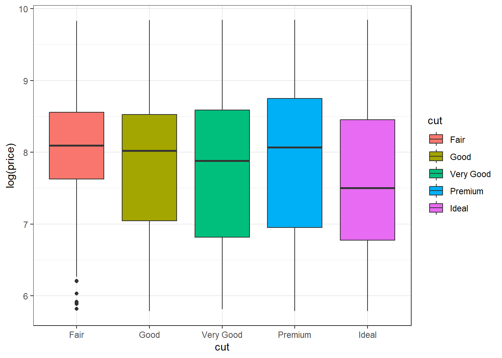
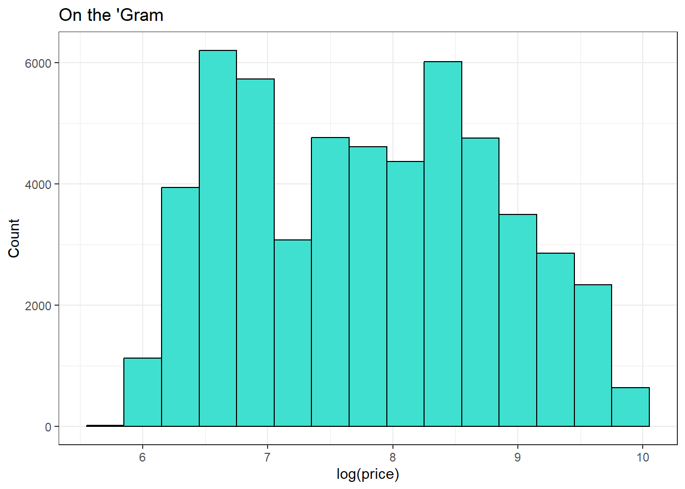
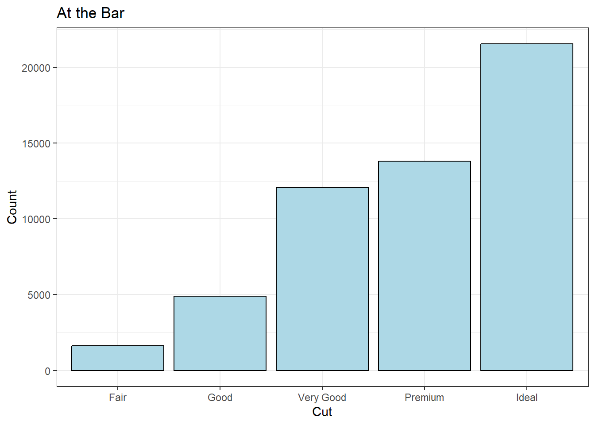
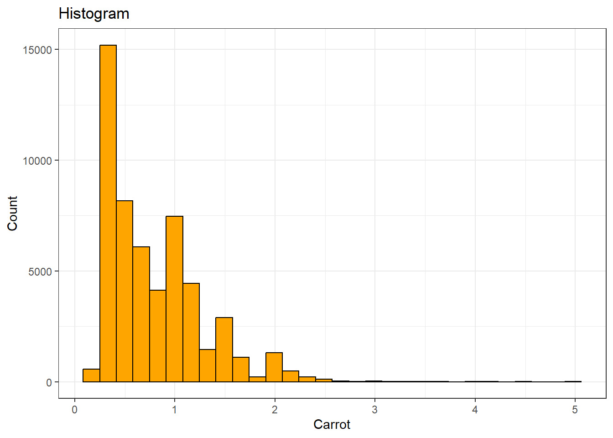
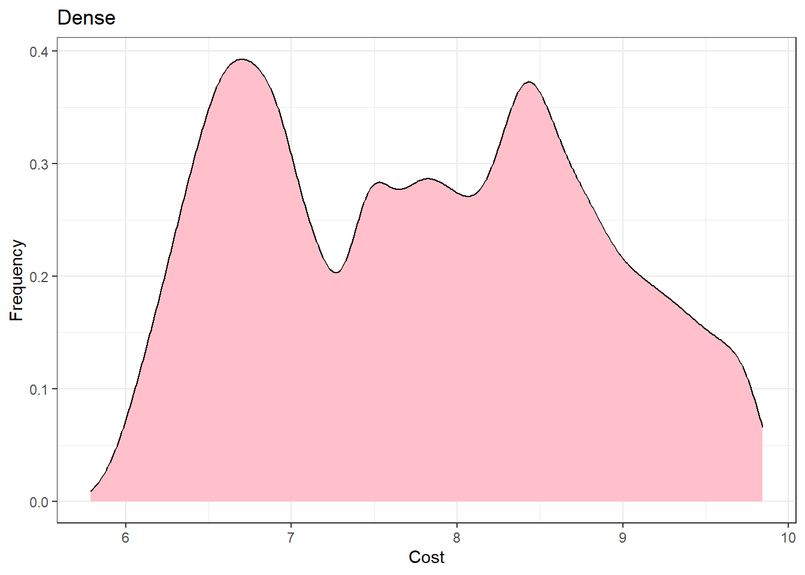
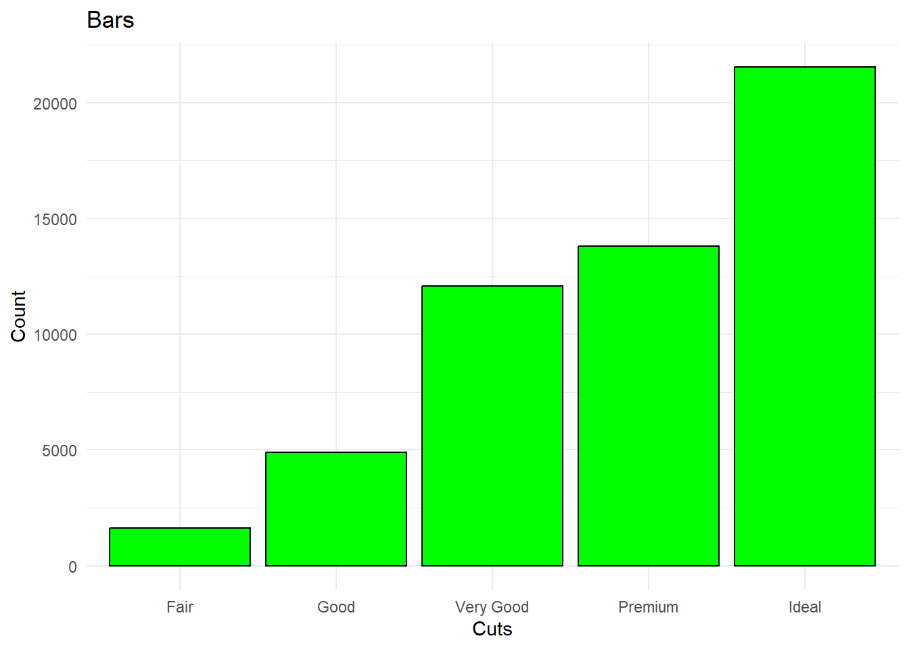
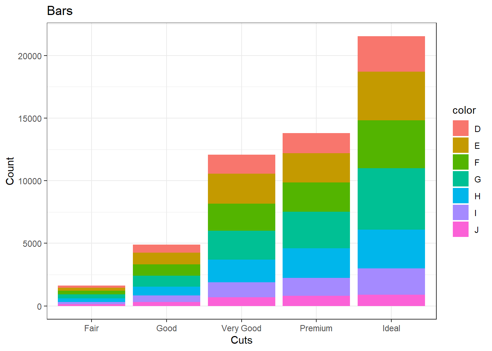
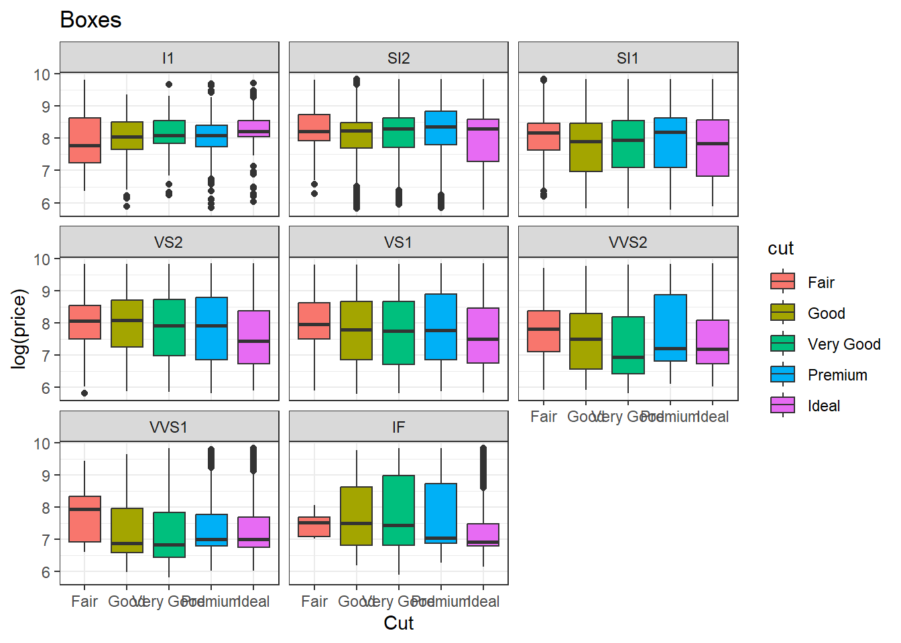
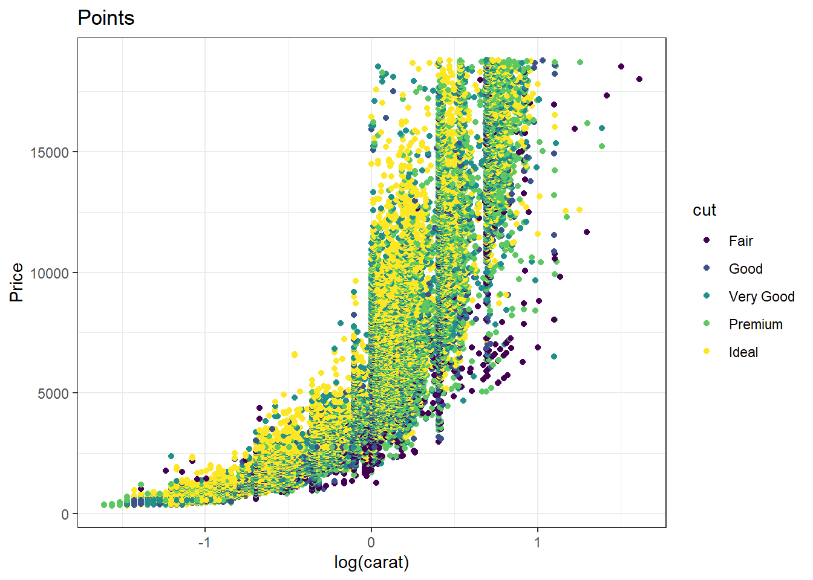

Biostats Cheat Sheet
1 Preface
Hello! There are many different ways to do many different things. This cheat sheet is meant to help us get started with handling data. Some days it can be difficult to remember the expansive vocabulary that R uses, and some days we’re just tired and our brains don’t want to work. This guide is for those days, supplying a simple scaffolding to us to apply to our data so that we can actually use it. Again, there are many different ways to do many different things. Nothing in this document is right or wrong, but it is certainly something. Hopefully, that something is helpful.
-Chris
2 How to use this guide
This guide is written in something called a “Quarto” document. Quarto is an extension of R Markdown, which is R’s way of combing a notepad which we can free type like this, with a runnable R script like this:
print("Hello!")[1] "Hello!"The vast majority of this guide with be examples of different R vocabularies and functions that are commonly used for each process. Each process is represented by its own section, such as “Exploring Data”. Many of these functions will repeat themselves in other sections, because there are no rules and I can do whatever I want.
This guide WILL be using the tidyverse package, since many of the functions we have learned about come from those packages.
library(tidyverse)Things that are NOT in this guide:
- Stylistic choices
- How to download R
- How to find/ set a working directory
- Precisely explaining what every function does
- How to make your own Quarto document
- Recipes for any kind of baked good
3 Functions and For-play
Many of the codes within the guide are great on their own, but to save time and mental well-being we can combine many of these into our own functions and for loops that are specific to the problems we encounter within our specific datasets. In general, if you have to type a long sequence of code more than twice, just turn it into a function and call the function instead. These functions can also be used within loops and maps and you can generate some pretty creative solutions. Loops and maps are great for any monotonous task that nobody has time for, such as sampling 1000 times or running the same function over 150 different columns. These can get much more complicated and are worth playing around with.
3.1 Functions
Functions help you do a lot of things in R. That’s a pretty generic description, but basically you give R an input (could be x, but could be many different things), and R will give you whatever you want back. Honestly functions are super cool because you can do a lot of things with them. I’m sure there are much more sophisticated explanations out there, but the general format of a function in R is this:
fx <- function(x){
fluff <- x^2 # can be whatever you want
return(fluff)
}
fx(4) # should give us 16 [1] 163.2 For Loops
For loops help you run a function or desired manipulation across multiple values. This could be across multiple columns in a data set, which will save you a lot of time and stress in the long run, so you don’t spend hours trying to do the same function over and over again.
Here’s the basic format:
n <- 100 # n would be the number of times you want this loop to run.
for(i in 1:n){
random_vector <- c(3, 4, 5, 6, 7, 8, 9, 10)
new_thing <- sample(random_vector, size = 2, replace = T)
do_something <- sum(new_thing)^2
return(do_something)
}
print(do_something)[1] 100This will run 100 samples from this vector and sum & square them. Not a very practical or useful example, but this just shows you what functions can do! You can put whatever your heart desires into those little brackets.
4 Finding a Dataset
You don’t have to harass a bunch of physicians in order to find a data et. In face, you really can just google them. Here are some websites to find all the datasets you could ever want:
- Kaggle
- Google Datasets
- GitHub
- Gumnit Data
- NASA data
If you have found a data set and don’t know where to start, just go through these sections in order. You likely won’t need every function for every data set and you may need more.
4.1 Reading in your data
Once you have your data (usually an excel or csv file), there are a few ways you can read it into your R script. There are some data sets already pre-loaded into the R universe, such as the diamonds data set that we often use in Biostats. I think csv files are superior to excel files, but I can’t honestly explain why, you could probably look it up though. My favorite ways to load in data are these:
# Read in as a tibble
diamond_tibble <- read_csv("diamond.csv")Rows: 53940 Columns: 10
── Column specification ────────────────────────────────────────────────────────
Delimiter: ","
chr (3): cut, color, clarity
dbl (7): carat, depth, table, price, x, y, z
ℹ Use `spec()` to retrieve the full column specification for this data.
ℹ Specify the column types or set `show_col_types = FALSE` to quiet this message.# when you use read_csv with an underscore, it's a tibble. WILD
# Read in as a data frame
diamond_df <- read.csv("diamond.csv")
# when you read in read.csv with a period, it's a DATAFRAME. WILDAlso, if you want to know the difference between tibbles and data frames, look it up in the textbook!
4.2 Importing from Excel
Sometimes the dataset that you’re looking at is not readily available as a csv, but it is as an Excel file (xlsx). Sure, you could open it in excel, clean it up, and convert it to a csv, but that’s one too many steps for me. I would recommend cleaning up the rows and columns in excel first, however. Many excel files have the first several rows as different labels cover many different columns, and sometimes they don’t even start at the top right cell and the entire dataset is randomly in the center of the spreadsheet. You can fix this in R, but excel is much quicker if you can since you can just drag and select the data you want then save that data as another xlsx file. Then you can import into R!
First, make sure you set your working directory where it needs to be. Then, click the “Files” tab (in the lower right quadrant of RStudio by default).

Here, you’ll see all of the files within your current working directory. You can move in and out of this directory to find the data set you want if needed. Once you find your xlsx file, click it and select “Import Dataset”.

This will pull up a large pop-up menu. This menu will provide a preview of how R thinks the excel file should look in R. Pay attention to the rows and columns in the preview. If the excel file had many different section headers, this file may look wonky and you may need to rearrange it in excel first. Remember that R can also make the first column the row names, so if that column existed in excel you may end up with 2 columns of called No. containing 1, 2, 3, 4, and so on.
In the bottom right of this pop-up, you will find the R code to copy and paste into your R script in order to import the xlsx file. I prefer to copy the code, close out of the window, and paste directly into my script. You could also just click “Import” in the bottom right, but that will only load your data into your environment and you will not have any code written to reset it if needed.

And that’s it! Now you can run the code provided to import your Excel file and have so much fun. All of your friends will be jealous, and you can sell them this information for money, thus solving any financial problems too. Its the gift that just keeps giving.
5 Exploring Data
Exploring your data does not refer to anything complicated. This is the first step after downloading your data set. We need to look at it, and see what the heck is going on in there. Looking at our data, we want to understand how many rows and columns there are, what classes (numerical, categorical, factor, etc.) are our variables, how many unique observations are there, what different names are used throughout the data, and so on. If we do not know what our data looks like, it will be pretty difficult to know what to do next.
So here’s some common functions we can use for this:
5.1 Looking at the data
# View the entire dataset in another window
View(diamonds)
# View the first 6 rows of a dataset
head(diamonds)# A tibble: 6 × 10
carat cut color clarity depth table price x y z
<dbl> <ord> <ord> <ord> <dbl> <dbl> <int> <dbl> <dbl> <dbl>
1 0.23 Ideal E SI2 61.5 55 326 3.95 3.98 2.43
2 0.21 Premium E SI1 59.8 61 326 3.89 3.84 2.31
3 0.23 Good E VS1 56.9 65 327 4.05 4.07 2.31
4 0.29 Premium I VS2 62.4 58 334 4.2 4.23 2.63
5 0.31 Good J SI2 63.3 58 335 4.34 4.35 2.75
6 0.24 Very Good J VVS2 62.8 57 336 3.94 3.96 2.48# View the last 6 rows of a dataset
tail(diamonds)# A tibble: 6 × 10
carat cut color clarity depth table price x y z
<dbl> <ord> <ord> <ord> <dbl> <dbl> <int> <dbl> <dbl> <dbl>
1 0.72 Premium D SI1 62.7 59 2757 5.69 5.73 3.58
2 0.72 Ideal D SI1 60.8 57 2757 5.75 5.76 3.5
3 0.72 Good D SI1 63.1 55 2757 5.69 5.75 3.61
4 0.7 Very Good D SI1 62.8 60 2757 5.66 5.68 3.56
5 0.86 Premium H SI2 61 58 2757 6.15 6.12 3.74
6 0.75 Ideal D SI2 62.2 55 2757 5.83 5.87 3.64# List of variables with additional info by class
summary(diamonds) carat cut color clarity depth
Min. :0.2000 Fair : 1610 D: 6775 SI1 :13065 Min. :43.00
1st Qu.:0.4000 Good : 4906 E: 9797 VS2 :12258 1st Qu.:61.00
Median :0.7000 Very Good:12082 F: 9542 SI2 : 9194 Median :61.80
Mean :0.7979 Premium :13791 G:11292 VS1 : 8171 Mean :61.75
3rd Qu.:1.0400 Ideal :21551 H: 8304 VVS2 : 5066 3rd Qu.:62.50
Max. :5.0100 I: 5422 VVS1 : 3655 Max. :79.00
J: 2808 (Other): 2531
table price x y
Min. :43.00 Min. : 326 Min. : 0.000 Min. : 0.000
1st Qu.:56.00 1st Qu.: 950 1st Qu.: 4.710 1st Qu.: 4.720
Median :57.00 Median : 2401 Median : 5.700 Median : 5.710
Mean :57.46 Mean : 3933 Mean : 5.731 Mean : 5.735
3rd Qu.:59.00 3rd Qu.: 5324 3rd Qu.: 6.540 3rd Qu.: 6.540
Max. :95.00 Max. :18823 Max. :10.740 Max. :58.900
z
Min. : 0.000
1st Qu.: 2.910
Median : 3.530
Mean : 3.539
3rd Qu.: 4.040
Max. :31.800
5.2 Structure of the data
# View a list of all variables with variable type
glimpse(diamonds)Rows: 53,940
Columns: 10
$ carat <dbl> 0.23, 0.21, 0.23, 0.29, 0.31, 0.24, 0.24, 0.26, 0.22, 0.23, 0.…
$ cut <ord> Ideal, Premium, Good, Premium, Good, Very Good, Very Good, Ver…
$ color <ord> E, E, E, I, J, J, I, H, E, H, J, J, F, J, E, E, I, J, J, J, I,…
$ clarity <ord> SI2, SI1, VS1, VS2, SI2, VVS2, VVS1, SI1, VS2, VS1, SI1, VS1, …
$ depth <dbl> 61.5, 59.8, 56.9, 62.4, 63.3, 62.8, 62.3, 61.9, 65.1, 59.4, 64…
$ table <dbl> 55, 61, 65, 58, 58, 57, 57, 55, 61, 61, 55, 56, 61, 54, 62, 58…
$ price <int> 326, 326, 327, 334, 335, 336, 336, 337, 337, 338, 339, 340, 34…
$ x <dbl> 3.95, 3.89, 4.05, 4.20, 4.34, 3.94, 3.95, 4.07, 3.87, 4.00, 4.…
$ y <dbl> 3.98, 3.84, 4.07, 4.23, 4.35, 3.96, 3.98, 4.11, 3.78, 4.05, 4.…
$ z <dbl> 2.43, 2.31, 2.31, 2.63, 2.75, 2.48, 2.47, 2.53, 2.49, 2.39, 2.…# View a list of all variables with variable class
str(diamonds)tibble [53,940 × 10] (S3: tbl_df/tbl/data.frame)
$ carat : num [1:53940] 0.23 0.21 0.23 0.29 0.31 0.24 0.24 0.26 0.22 0.23 ...
$ cut : Ord.factor w/ 5 levels "Fair"<"Good"<..: 5 4 2 4 2 3 3 3 1 3 ...
$ color : Ord.factor w/ 7 levels "D"<"E"<"F"<"G"<..: 2 2 2 6 7 7 6 5 2 5 ...
$ clarity: Ord.factor w/ 8 levels "I1"<"SI2"<"SI1"<..: 2 3 5 4 2 6 7 3 4 5 ...
$ depth : num [1:53940] 61.5 59.8 56.9 62.4 63.3 62.8 62.3 61.9 65.1 59.4 ...
$ table : num [1:53940] 55 61 65 58 58 57 57 55 61 61 ...
$ price : int [1:53940] 326 326 327 334 335 336 336 337 337 338 ...
$ x : num [1:53940] 3.95 3.89 4.05 4.2 4.34 3.94 3.95 4.07 3.87 4 ...
$ y : num [1:53940] 3.98 3.84 4.07 4.23 4.35 3.96 3.98 4.11 3.78 4.05 ...
$ z : num [1:53940] 2.43 2.31 2.31 2.63 2.75 2.48 2.47 2.53 2.49 2.39 ...# View the total number of rows and columns
dim(diamonds)[1] 53940 10# View the total number of columns
length(diamonds)[1] 10# View the total number of columns
ncol(diamonds)[1] 10# View the total number of rows
nrow(diamonds)[1] 539405.3 Class and names of variables
# View the variable names of a dataset. Can be used on a vector
names(diamonds) [1] "carat" "cut" "color" "clarity" "depth" "table" "price"
[8] "x" "y" "z" # View the class of a variable, such as numerical or factor
class(diamonds$carat)[1] "numeric"# View all values without repeats
unique(diamonds$cut)[1] Ideal Premium Good Very Good Fair
Levels: Fair < Good < Very Good < Premium < Ideal5.4 Tables and plots of data
# Plot a table of counts with totals added
diamonds |>
select(cut, color) |>
table() |>
addmargins() color
cut D E F G H I J Sum
Fair 163 224 312 314 303 175 119 1610
Good 662 933 909 871 702 522 307 4906
Very Good 1513 2400 2164 2299 1824 1204 678 12082
Premium 1603 2337 2331 2924 2360 1428 808 13791
Ideal 2834 3903 3826 4884 3115 2093 896 21551
Sum 6775 9797 9542 11292 8304 5422 2808 53940# Plot a table of proportions
diamonds$cut |>
table() |>
prop.table()
Fair Good Very Good Premium Ideal
0.02984798 0.09095291 0.22398962 0.25567297 0.39953652 # Plot a histogram of a continuous variable to check distribution
diamonds |>
ggplot(aes(x = log(price))) +
geom_histogram(binwidth = 0.3,
color = "black",
fill = "turquoise") +
labs(title = "On the 'Gram", x = "log(price)", y = "Count") +
theme_bw()
# Plot a bar plot of a categorical variable to check distribution
diamonds |>
ggplot(aes(x = cut)) +
geom_bar(fill = "lightblue", color = "black") +
labs(title = "At the Bar", x = "Cut", y = "Count") +
theme_bw()
6 Cleaning Data
Unfortunately, this step does not include soap. But that shouldn’t stop you from using any. Clean data is the data that you want. All of the variables are the correct class, any missing or duplicate data is identified and addressed, any values that need to be re-coded are taken care of, and that we’re left with data that we actually care about. Well, as much as a person “could” care about data.
Anyways, more functions:
6.1 Identifying variable types and class
# View a list of all variables with variable class
glimpse(diamonds)Rows: 53,940
Columns: 10
$ carat <dbl> 0.23, 0.21, 0.23, 0.29, 0.31, 0.24, 0.24, 0.26, 0.22, 0.23, 0.…
$ cut <ord> Ideal, Premium, Good, Premium, Good, Very Good, Very Good, Ver…
$ color <ord> E, E, E, I, J, J, I, H, E, H, J, J, F, J, E, E, I, J, J, J, I,…
$ clarity <ord> SI2, SI1, VS1, VS2, SI2, VVS2, VVS1, SI1, VS2, VS1, SI1, VS1, …
$ depth <dbl> 61.5, 59.8, 56.9, 62.4, 63.3, 62.8, 62.3, 61.9, 65.1, 59.4, 64…
$ table <dbl> 55, 61, 65, 58, 58, 57, 57, 55, 61, 61, 55, 56, 61, 54, 62, 58…
$ price <int> 326, 326, 327, 334, 335, 336, 336, 337, 337, 338, 339, 340, 34…
$ x <dbl> 3.95, 3.89, 4.05, 4.20, 4.34, 3.94, 3.95, 4.07, 3.87, 4.00, 4.…
$ y <dbl> 3.98, 3.84, 4.07, 4.23, 4.35, 3.96, 3.98, 4.11, 3.78, 4.05, 4.…
$ z <dbl> 2.43, 2.31, 2.31, 2.63, 2.75, 2.48, 2.47, 2.53, 2.49, 2.39, 2.…# View the class of a variable or dataframe
class(diamonds$carat)[1] "numeric"# View the unique levels within an ordinal factor.
# The order of these levels matter
levels(diamonds$cut)[1] "Fair" "Good" "Very Good" "Premium" "Ideal" # View the non-repeating unique values
unique(diamonds$cut)[1] Ideal Premium Good Very Good Fair
Levels: Fair < Good < Very Good < Premium < Ideal6.2 Choosing the data we want
# Only selects the variables chosen
diamonds |>
select(cut, color)# A tibble: 53,940 × 2
cut color
<ord> <ord>
1 Ideal E
2 Premium E
3 Good E
4 Premium I
5 Good J
6 Very Good J
7 Very Good I
8 Very Good H
9 Fair E
10 Very Good H
# ℹ 53,930 more rows# Only considers observations which meet the criteria specified
diamonds |>
filter(color == "D", carat >= mean(carat))# A tibble: 2,000 × 10
carat cut color clarity depth table price x y z
<dbl> <ord> <ord> <ord> <dbl> <dbl> <int> <dbl> <dbl> <dbl>
1 0.91 Ideal D SI2 62.2 57 2803 6.21 6.15 3.85
2 0.81 Premium D SI2 59.2 57 2809 6.15 6.05 3.61
3 0.83 Very Good D SI1 63.5 54 2811 5.98 5.95 3.79
4 0.92 Ideal D SI2 61.9 56 2840 6.27 6.2 3.86
5 0.8 Very Good D SI2 62.5 59 2862 5.88 5.92 3.69
6 1.08 Premium D I1 61.9 60 2869 6.55 6.48 4.03
7 0.9 Fair D SI2 66.9 57 2885 6.02 5.9 3.99
8 0.83 Very Good D SI2 63.1 57 2918 5.95 5.9 3.74
9 0.8 Very Good D SI1 58.2 63 2925 6.07 6.03 3.52
10 0.81 Good D SI2 63.6 55 2926 5.91 5.86 3.74
# ℹ 1,990 more rows# Shows the non-repeating values
unique(diamonds$clarity)[1] SI2 SI1 VS1 VS2 VVS2 VVS1 I1 IF
Levels: I1 < SI2 < SI1 < VS2 < VS1 < VVS2 < VVS1 < IF# Randomly selects values of the size and distribution specified.
# "replace" determines whether a value can occur more than once.
diamonds$carat |>
sample(size = 5, replace = TRUE)[1] 0.80 0.56 1.50 0.31 0.946.3 Duplicated data
# Creates a vector with a value occuring more than once
example.vector <- c(1, 1, 2, 3, 4)
# Gives a logical answer to whether a value has occured before
duplicated(example.vector)[1] FALSE TRUE FALSE FALSE FALSE# Gives all non-repeating values
unique(example.vector)[1] 1 2 3 46.4 Recoding data
# Re-labels values from the old value, to the new
recode(example.vector, "1" = 7)[1] 7 7 2 3 46.5 Addressing NAs:
Missing values are about as complicated as you want them to be. For that reason, I will NOT be going over how to decide whether your data is missing completely at random (MCAR), missing at random (MAR), missing not at random (MNAR), or what the best practice for imputation will be for your specific data set. In general, NAs are either removed, imputed by the mean, replaced by the value before or after it, or predicted using the information around it (pmm, knn, rf, “mice” package, etc.). Look these strategies up at your own risk, it’ll take your entire weekend.
6.6 Identifying NAs
# Creates a vector with 3 NAs
example.vector <- c(NA, 2, 3, NA, 4, 5, NA)
# Counts the total number of NAs in the vector
sum(is.na(example.vector))[1] 3# Shows which cell the NAs are located
which(is.na(example.vector))[1] 1 4 76.7 Removing NAs
# Shows only the observations without NAs (specify [row, col] if using dataframe)
example.vector[complete.cases(example.vector)][1] 2 3 4 5# Another way to show only the observations without NAs
example.vector[!is.na(example.vector)][1] 2 3 4 56.8 Simple mean imputation
# Identifies the mean of our vector WITHOUT NAs
mean(example.vector[!is.na(example.vector)])[1] 3.5# Overwrites the NAs in our vector with the value determined above
example.vector[is.na(example.vector)] <-
mean(example.vector[!is.na(example.vector)])
example.vector[1] 3.5 2.0 3.0 3.5 4.0 5.0 3.56.9 Replacing NAs with last/ next observation
#The fill() function only works on a dataframe. So we create one
example.vector <- as.data.frame(c(NA, 2, 3, NA, 4, 5, NA))
example.vector |>
colnames() <- "example"
example.vector example
1 NA
2 2
3 3
4 NA
5 4
6 5
7 NAIn the “fill” function, direction determines whether values are carried from above or below. In this case, The NAs are replaced with the value above it (down) first, leaving only the first NA. Then, the NAs are replaced with the value below it (up) in order to ensure no leading or trailing NAs. This also works on blank cells.
example.vector |>
fill(everything(), .direction = "downup") example
1 2
2 2
3 3
4 3
5 4
6 5
7 5Prediction with KNN, RF, PMM, etc. is waaaay beyong this guide.
7 Manipulating Data
We shouldn’t judge a book by a cover. Unless its a data set, and we need the tools to set them straight. Manipulating data is self-explanatory. We take what data we have, and smack it around until it gives us the answers we need. This includes renaming, reordering, changing class, selecting, re-coding, changing, joining, and reshaping data.
No functions this time. You’ve had enough.
Just kidding, they’re right here:
7.1 Changing variable class
# Create a new version any time you plan on making permanent changes
diamonds2 <- diamonds
# Changes cut from a categorical variable to a factor with ordinal levels
diamonds2$cut <- as.factor(diamonds2$cut)
# Shows the class of the cut variable
class(diamonds2$cut)[1] "ordered" "factor" # Shows the different levels of the cut variable. The order here matters.
levels(diamonds2$cut)[1] "Fair" "Good" "Very Good" "Premium" "Ideal" # Changing the levels and labels of the cut variable. The order here matters.
diamonds2 <- diamonds2 |>
mutate(cut = factor(cut,
levels = c("Fair", "Good", "Very Good", "Ideal", "Premium"),
labels = c("Gross", "Icky", "Okay-ish", "Meh", "Sparkly")))
diamonds2# A tibble: 53,940 × 10
carat cut color clarity depth table price x y z
<dbl> <ord> <ord> <ord> <dbl> <dbl> <int> <dbl> <dbl> <dbl>
1 0.23 Meh E SI2 61.5 55 326 3.95 3.98 2.43
2 0.21 Sparkly E SI1 59.8 61 326 3.89 3.84 2.31
3 0.23 Icky E VS1 56.9 65 327 4.05 4.07 2.31
4 0.29 Sparkly I VS2 62.4 58 334 4.2 4.23 2.63
5 0.31 Icky J SI2 63.3 58 335 4.34 4.35 2.75
6 0.24 Okay-ish J VVS2 62.8 57 336 3.94 3.96 2.48
7 0.24 Okay-ish I VVS1 62.3 57 336 3.95 3.98 2.47
8 0.26 Okay-ish H SI1 61.9 55 337 4.07 4.11 2.53
9 0.22 Gross E VS2 65.1 61 337 3.87 3.78 2.49
10 0.23 Okay-ish H VS1 59.4 61 338 4 4.05 2.39
# ℹ 53,930 more rows7.2 Renaming columns
# Rename variables by defining the new name first, then the old
diamonds2 |>
rename("slice" = "cut")# A tibble: 53,940 × 10
carat slice color clarity depth table price x y z
<dbl> <ord> <ord> <ord> <dbl> <dbl> <int> <dbl> <dbl> <dbl>
1 0.23 Meh E SI2 61.5 55 326 3.95 3.98 2.43
2 0.21 Sparkly E SI1 59.8 61 326 3.89 3.84 2.31
3 0.23 Icky E VS1 56.9 65 327 4.05 4.07 2.31
4 0.29 Sparkly I VS2 62.4 58 334 4.2 4.23 2.63
5 0.31 Icky J SI2 63.3 58 335 4.34 4.35 2.75
6 0.24 Okay-ish J VVS2 62.8 57 336 3.94 3.96 2.48
7 0.24 Okay-ish I VVS1 62.3 57 336 3.95 3.98 2.47
8 0.26 Okay-ish H SI1 61.9 55 337 4.07 4.11 2.53
9 0.22 Gross E VS2 65.1 61 337 3.87 3.78 2.49
10 0.23 Okay-ish H VS1 59.4 61 338 4 4.05 2.39
# ℹ 53,930 more rows7.3 Reordering columns
# The select function will always pull variables in the order you define
diamonds2 |>
select(cut, clarity, everything())# A tibble: 53,940 × 10
cut clarity carat color depth table price x y z
<ord> <ord> <dbl> <ord> <dbl> <dbl> <int> <dbl> <dbl> <dbl>
1 Meh SI2 0.23 E 61.5 55 326 3.95 3.98 2.43
2 Sparkly SI1 0.21 E 59.8 61 326 3.89 3.84 2.31
3 Icky VS1 0.23 E 56.9 65 327 4.05 4.07 2.31
4 Sparkly VS2 0.29 I 62.4 58 334 4.2 4.23 2.63
5 Icky SI2 0.31 J 63.3 58 335 4.34 4.35 2.75
6 Okay-ish VVS2 0.24 J 62.8 57 336 3.94 3.96 2.48
7 Okay-ish VVS1 0.24 I 62.3 57 336 3.95 3.98 2.47
8 Okay-ish SI1 0.26 H 61.9 55 337 4.07 4.11 2.53
9 Gross VS2 0.22 E 65.1 61 337 3.87 3.78 2.49
10 Okay-ish VS1 0.23 H 59.4 61 338 4 4.05 2.39
# ℹ 53,930 more rows7.4 Selecting, Filtering, and Arranging
# You can combine selecting, filtering, and arranging using pipes
diamonds2 |>
select(cut, price) |>
filter(cut == "Okay-ish") |>
arrange(desc(price))# A tibble: 12,082 × 2
cut price
<ord> <int>
1 Okay-ish 18818
2 Okay-ish 18803
3 Okay-ish 18781
4 Okay-ish 18777
5 Okay-ish 18759
6 Okay-ish 18741
7 Okay-ish 18731
8 Okay-ish 18709
9 Okay-ish 18692
10 Okay-ish 18691
# ℹ 12,072 more rows7.5 Re-coding values
# Recoding values can change the value to something more useful
diamonds2$color <- diamonds2$color |>
recode("E" = "blue")
diamonds2# A tibble: 53,940 × 10
carat cut color clarity depth table price x y z
<dbl> <ord> <ord> <ord> <dbl> <dbl> <int> <dbl> <dbl> <dbl>
1 0.23 Meh blue SI2 61.5 55 326 3.95 3.98 2.43
2 0.21 Sparkly blue SI1 59.8 61 326 3.89 3.84 2.31
3 0.23 Icky blue VS1 56.9 65 327 4.05 4.07 2.31
4 0.29 Sparkly I VS2 62.4 58 334 4.2 4.23 2.63
5 0.31 Icky J SI2 63.3 58 335 4.34 4.35 2.75
6 0.24 Okay-ish J VVS2 62.8 57 336 3.94 3.96 2.48
7 0.24 Okay-ish I VVS1 62.3 57 336 3.95 3.98 2.47
8 0.26 Okay-ish H SI1 61.9 55 337 4.07 4.11 2.53
9 0.22 Gross blue VS2 65.1 61 337 3.87 3.78 2.49
10 0.23 Okay-ish H VS1 59.4 61 338 4 4.05 2.39
# ℹ 53,930 more rows7.6 Changing data with mutate
# Mutate can create a new variable, or change an existing one
diamonds2 |>
mutate(carrot = carat) |>
mutate(carat = mean(carat))# A tibble: 53,940 × 11
carat cut color clarity depth table price x y z carrot
<dbl> <ord> <ord> <ord> <dbl> <dbl> <int> <dbl> <dbl> <dbl> <dbl>
1 0.798 Meh blue SI2 61.5 55 326 3.95 3.98 2.43 0.23
2 0.798 Sparkly blue SI1 59.8 61 326 3.89 3.84 2.31 0.21
3 0.798 Icky blue VS1 56.9 65 327 4.05 4.07 2.31 0.23
4 0.798 Sparkly I VS2 62.4 58 334 4.2 4.23 2.63 0.29
5 0.798 Icky J SI2 63.3 58 335 4.34 4.35 2.75 0.31
6 0.798 Okay-ish J VVS2 62.8 57 336 3.94 3.96 2.48 0.24
7 0.798 Okay-ish I VVS1 62.3 57 336 3.95 3.98 2.47 0.24
8 0.798 Okay-ish H SI1 61.9 55 337 4.07 4.11 2.53 0.26
9 0.798 Gross blue VS2 65.1 61 337 3.87 3.78 2.49 0.22
10 0.798 Okay-ish H VS1 59.4 61 338 4 4.05 2.39 0.23
# ℹ 53,930 more rows# Mutate can be combined with other functions to make life easier
diamonds2 |>
mutate(across(where(is.numeric), mean))# A tibble: 53,940 × 10
carat cut color clarity depth table price x y z
<dbl> <ord> <ord> <ord> <dbl> <dbl> <dbl> <dbl> <dbl> <dbl>
1 0.798 Meh blue SI2 61.7 57.5 3933. 5.73 5.73 3.54
2 0.798 Sparkly blue SI1 61.7 57.5 3933. 5.73 5.73 3.54
3 0.798 Icky blue VS1 61.7 57.5 3933. 5.73 5.73 3.54
4 0.798 Sparkly I VS2 61.7 57.5 3933. 5.73 5.73 3.54
5 0.798 Icky J SI2 61.7 57.5 3933. 5.73 5.73 3.54
6 0.798 Okay-ish J VVS2 61.7 57.5 3933. 5.73 5.73 3.54
7 0.798 Okay-ish I VVS1 61.7 57.5 3933. 5.73 5.73 3.54
8 0.798 Okay-ish H SI1 61.7 57.5 3933. 5.73 5.73 3.54
9 0.798 Gross blue VS2 61.7 57.5 3933. 5.73 5.73 3.54
10 0.798 Okay-ish H VS1 61.7 57.5 3933. 5.73 5.73 3.54
# ℹ 53,930 more rows7.7 Conditional changes with ifelse
“ifelse” takes a condition you define as the “test” argument, and if the value meets those conditions it alters the value as you define it with the “yes” argument. If the value does not meet those conditions, it alters the value based upon how you defined the “no” argument.
diamonds2 |>
mutate(price = (ifelse(
test = price >= median(price),
yes = "Can't Afford",
no = "Still Can't Afford")))# A tibble: 53,940 × 10
carat cut color clarity depth table price x y z
<dbl> <ord> <ord> <ord> <dbl> <dbl> <chr> <dbl> <dbl> <dbl>
1 0.23 Meh blue SI2 61.5 55 Still Can't Afford 3.95 3.98 2.43
2 0.21 Sparkly blue SI1 59.8 61 Still Can't Afford 3.89 3.84 2.31
3 0.23 Icky blue VS1 56.9 65 Still Can't Afford 4.05 4.07 2.31
4 0.29 Sparkly I VS2 62.4 58 Still Can't Afford 4.2 4.23 2.63
5 0.31 Icky J SI2 63.3 58 Still Can't Afford 4.34 4.35 2.75
6 0.24 Okay-ish J VVS2 62.8 57 Still Can't Afford 3.94 3.96 2.48
7 0.24 Okay-ish I VVS1 62.3 57 Still Can't Afford 3.95 3.98 2.47
8 0.26 Okay-ish H SI1 61.9 55 Still Can't Afford 4.07 4.11 2.53
9 0.22 Gross blue VS2 65.1 61 Still Can't Afford 3.87 3.78 2.49
10 0.23 Okay-ish H VS1 59.4 61 Still Can't Afford 4 4.05 2.39
# ℹ 53,930 more rowsUse “case_when” for multiple conditions at once. Note the syntax is different. The condition is on the left side of the ~ and if TRUE the values will be replaced by the right side of the ~. The final arugment “TRUE” specifies that if a value did not meet any of the conditions above, then replace it with whatever is right of the final ~.
diamonds2 |>
mutate(price = case_when(
price < quantile(price, probs = 0.33) ~ "FREE",
price < quantile(price, probs = 0.66) ~ "BUY NOW",
price < quantile(price, probs = 1) ~ "SELL NOW",
TRUE ~ "NA"))# A tibble: 53,940 × 10
carat cut color clarity depth table price x y z
<dbl> <ord> <ord> <ord> <dbl> <dbl> <chr> <dbl> <dbl> <dbl>
1 0.23 Meh blue SI2 61.5 55 FREE 3.95 3.98 2.43
2 0.21 Sparkly blue SI1 59.8 61 FREE 3.89 3.84 2.31
3 0.23 Icky blue VS1 56.9 65 FREE 4.05 4.07 2.31
4 0.29 Sparkly I VS2 62.4 58 FREE 4.2 4.23 2.63
5 0.31 Icky J SI2 63.3 58 FREE 4.34 4.35 2.75
6 0.24 Okay-ish J VVS2 62.8 57 FREE 3.94 3.96 2.48
7 0.24 Okay-ish I VVS1 62.3 57 FREE 3.95 3.98 2.47
8 0.26 Okay-ish H SI1 61.9 55 FREE 4.07 4.11 2.53
9 0.22 Gross blue VS2 65.1 61 FREE 3.87 3.78 2.49
10 0.23 Okay-ish H VS1 59.4 61 FREE 4 4.05 2.39
# ℹ 53,930 more rows7.8 Applying changes across a dataset
# You can use a for loop for monotonous tasks like replacing every value with SPAM
for (i in seq_along(diamonds2)) {
diamonds2[[i]] <- paste("SPAM")
}
diamonds2# A tibble: 53,940 × 10
carat cut color clarity depth table price x y z
<chr> <chr> <chr> <chr> <chr> <chr> <chr> <chr> <chr> <chr>
1 SPAM SPAM SPAM SPAM SPAM SPAM SPAM SPAM SPAM SPAM
2 SPAM SPAM SPAM SPAM SPAM SPAM SPAM SPAM SPAM SPAM
3 SPAM SPAM SPAM SPAM SPAM SPAM SPAM SPAM SPAM SPAM
4 SPAM SPAM SPAM SPAM SPAM SPAM SPAM SPAM SPAM SPAM
5 SPAM SPAM SPAM SPAM SPAM SPAM SPAM SPAM SPAM SPAM
6 SPAM SPAM SPAM SPAM SPAM SPAM SPAM SPAM SPAM SPAM
7 SPAM SPAM SPAM SPAM SPAM SPAM SPAM SPAM SPAM SPAM
8 SPAM SPAM SPAM SPAM SPAM SPAM SPAM SPAM SPAM SPAM
9 SPAM SPAM SPAM SPAM SPAM SPAM SPAM SPAM SPAM SPAM
10 SPAM SPAM SPAM SPAM SPAM SPAM SPAM SPAM SPAM SPAM
# ℹ 53,930 more rows# You can also use maps in a similar way, turning every value lower case
map_df(diamonds2, tolower)# A tibble: 53,940 × 10
carat cut color clarity depth table price x y z
<chr> <chr> <chr> <chr> <chr> <chr> <chr> <chr> <chr> <chr>
1 spam spam spam spam spam spam spam spam spam spam
2 spam spam spam spam spam spam spam spam spam spam
3 spam spam spam spam spam spam spam spam spam spam
4 spam spam spam spam spam spam spam spam spam spam
5 spam spam spam spam spam spam spam spam spam spam
6 spam spam spam spam spam spam spam spam spam spam
7 spam spam spam spam spam spam spam spam spam spam
8 spam spam spam spam spam spam spam spam spam spam
9 spam spam spam spam spam spam spam spam spam spam
10 spam spam spam spam spam spam spam spam spam spam
# ℹ 53,930 more rows7.9 Reshaping using pivots
# Creates a data frame from class
stocks <- data.frame(
time = as.Date('2009-01-01') + 0:9,
X = rnorm(10, 0, 1),
Y = rnorm(10, 0, 2),
Z = rnorm(10, 0, 4)
)Select which columns to pivot longer with “cols”. The names of those columns will then go into a new column specified under “names_to”. The values within the old columns will go into their own new column specified with “values_to”.
stocks <- stocks |>
pivot_longer(cols = c(X, Y, Z),
names_to = "stonks",
values_to = "price")
stocks# A tibble: 30 × 3
time stonks price
<date> <chr> <dbl>
1 2009-01-01 X 0.833
2 2009-01-01 Y 0.675
3 2009-01-01 Z -3.33
4 2009-01-02 X 0.437
5 2009-01-02 Y 3.25
6 2009-01-02 Z 1.49
7 2009-01-03 X 0.0695
8 2009-01-03 Y -1.35
9 2009-01-03 Z -5.07
10 2009-01-04 X 1.23
# ℹ 20 more rowsSimilarly in pivot_wider, the “names_from” will take the values of whatever column you choose and create new columns for every value within. In this case, the new columns will be called X, Y, and Z. The “values_from” argument will take every value from the column you choose and fill the new columns created by “names_from” with those values. In this case, the associated price will be listed under each of X, Y, and Z.
stocks <- stocks |>
pivot_wider(names_from = stonks,
values_from = price)
stocks# A tibble: 10 × 4
time X Y Z
<date> <dbl> <dbl> <dbl>
1 2009-01-01 0.833 0.675 -3.33
2 2009-01-02 0.437 3.25 1.49
3 2009-01-03 0.0695 -1.35 -5.07
4 2009-01-04 1.23 1.20 3.52
5 2009-01-05 0.295 -0.762 -5.22
6 2009-01-06 -0.421 2.22 5.20
7 2009-01-07 0.999 -3.68 -1.26
8 2009-01-08 -2.07 2.97 4.94
9 2009-01-09 0.330 0.631 -3.71
10 2009-01-10 -1.36 -3.45 -0.4088 Describing and Summarizing Data
These steps are beginning to get more and more self-explanatory. The goal here is to use descriptive statistics to “describe” the data that we want to analyze. Shocking, I know. The statistics we’re looking for describe the range/spread, centrality, and variance of the data. These statistics can be summarized using the usual summary function, but also by using tables.
And now functions:
8.1 Range and spread
# View the lowest and highest value
range(diamonds$carat)[1] 0.20 5.01# View the lowest value
min(diamonds$carat)[1] 0.2# View the highest value
max(diamonds$carat)[1] 5.01# Create a summary of your choosing
diamonds |>
group_by(cut) |>
summarize(meanPrice = mean(price)) |>
arrange(-desc(meanPrice))# A tibble: 5 × 2
cut meanPrice
<ord> <dbl>
1 Ideal 3458.
2 Good 3929.
3 Very Good 3982.
4 Fair 4359.
5 Premium 4584.8.2 Centrality
# View the average
mean(diamonds$carat)[1] 0.7979397# View the median
median(diamonds$carat)[1] 0.7# View a large summary with quantiles and medians for continuous data
summary(diamonds$carat) Min. 1st Qu. Median Mean 3rd Qu. Max.
0.2000 0.4000 0.7000 0.7979 1.0400 5.0100 8.3 Variance and standard deviation
# View the variance
var(diamonds$carat)[1] 0.2246867# View the standard deviation
sd(diamonds$carat)[1] 0.47401129 Visualizing Data
Obviously this refers to plots, which means ggplot2 is coming. We want to tell a story with our data, and that comes from visualization. It becomes more and more difficult as you progress through these sections to be able to explain exactly what to do, as by this point your data is already unique to you. What I can do, is to help decide which plot to use depending on the types of variables that you’re left with at this point.
Below is a list of scenarios and some options for which plots to use:
9.1 Single numerical variable only
# Creates a histogram
diamonds |>
ggplot(aes(x = carat)) +
geom_histogram(fill = "orange", color = "black") +
labs(title ="Histogram", x = "Carrot", y = "Count") +
theme_bw()`stat_bin()` using `bins = 30`. Pick better value with `binwidth`.
# Creates a density plot
diamonds |>
ggplot(aes(x = log(price))) +
geom_density(fill = "pink") +
labs(title = "Dense", x = "Cost", y = "Frequency") +
theme_bw()
9.2 Single categorical only
# Creates a bar plot
diamonds |>
ggplot(aes(x = cut)) +
geom_bar(fill = "green", color = "black") +
labs(title = "Bars", x = "Cuts", y = "Count") +
theme_minimal()
9.3 Multiple categorical only
# Creates a stacked bar plot
diamonds |>
ggplot(aes(x = cut, fill = color)) +
geom_bar(position = "stack") +
labs(title = "Bars", x = "Cuts", y = "Count") +
theme_bw() +
scale_fill_discrete()
9.4 One numerical and one or more categorical
# Creates a box plot
diamonds |>
ggplot(aes(x = cut, y = log(price), fill = cut)) +
geom_boxplot() +
labs(title = "Boxes", x = "Cut", y = "log(price)") +
facet_wrap(~ clarity) +
theme_bw() +
scale_fill_discrete()
9.5 One or more numerical and one or more categorical
# Creates a scatterplot
diamonds |>
ggplot(aes(x = log(carat), y = price, color = cut)) +
geom_point() +
labs(title = "Points", x = "log(carat)", y = "Price") +
theme_bw() +
scale_fill_continuous()
10 Analyzing Data
Finally. The end. Both of writing this guide, but also of your quest for usable data. Analyzing data is the generally the end goal of everything. We form a research question, and use analysis to get some insight on the question. There are as many different analyses as you can think of, then there will be even more because someone probably invented one while you were counting. I’ll only list the few we’ve gone over in class. What’s important when deciding which analysis to use is to make sure you understand the assumptions behind every test, and which test applies to which combinations of variables.
We’ll start with the T-Test:
10.1 T-Test
t.test(diamonds$carat)
One Sample t-test
data: diamonds$carat
t = 390.96, df = 53939, p-value < 2.2e-16
alternative hypothesis: true mean is not equal to 0
95 percent confidence interval:
0.7939395 0.8019400
sample estimates:
mean of x
0.7979397 with(diamonds, t.test(carat, price, alternative = "two.sided"))
Welch Two Sample t-test
data: carat and price
t = -228.91, df = 53939, p-value < 2.2e-16
alternative hypothesis: true difference in means is not equal to 0
95 percent confidence interval:
-3965.670 -3898.334
sample estimates:
mean of x mean of y
0.7979397 3932.7997219 Assumptions:
- Data is randomly distributed
- Data is continuous or 2 level categorical
- Homogeneity of variance
- Distribution is approximately normal/ t-distribution
10.2 ANOVA
with(diamonds, lm(price ~ cut)) |>
summary()
Call:
lm(formula = price ~ cut)
Residuals:
Min 1Q Median 3Q Max
-4258 -2741 -1494 1360 15348
Coefficients:
Estimate Std. Error t value Pr(>|t|)
(Intercept) 4062.24 25.40 159.923 < 2e-16 ***
cut.L -362.73 68.04 -5.331 9.8e-08 ***
cut.Q -225.58 60.65 -3.719 2e-04 ***
cut.C -699.50 52.78 -13.253 < 2e-16 ***
cut^4 -280.36 42.56 -6.588 4.5e-11 ***
---
Signif. codes: 0 '***' 0.001 '**' 0.01 '*' 0.05 '.' 0.1 ' ' 1
Residual standard error: 3964 on 53935 degrees of freedom
Multiple R-squared: 0.01286, Adjusted R-squared: 0.01279
F-statistic: 175.7 on 4 and 53935 DF, p-value: < 2.2e-16with(diamonds, aov(price ~ clarity)) |>
summary() Df Sum Sq Mean Sq F value Pr(>F)
clarity 7 2.331e+10 3.330e+09 215 <2e-16 ***
Residuals 53932 8.352e+11 1.549e+07
---
Signif. codes: 0 '***' 0.001 '**' 0.01 '*' 0.05 '.' 0.1 ' ' 1Assumptions:
- Normal distribution
- Homogeneity of variance
- Independent observations
10.3 Linear Regressions
with(diamonds, lm(price ~ carat + cut + color)) |>
summary()
Call:
lm(formula = price ~ carat + cut + color)
Residuals:
Min 1Q Median 3Q Max
-17313.9 -751.2 -83.9 543.6 12273.0
Coefficients:
Estimate Std. Error t value Pr(>|t|)
(Intercept) -3149.82 15.76 -199.905 < 2e-16 ***
carat 8183.74 13.90 588.885 < 2e-16 ***
cut.L 1243.35 24.74 50.260 < 2e-16 ***
cut.Q -531.75 21.93 -24.252 < 2e-16 ***
cut.C 372.06 19.16 19.417 < 2e-16 ***
cut^4 76.15 15.39 4.949 7.49e-07 ***
color.L -1579.17 21.72 -72.699 < 2e-16 ***
color.Q -732.85 19.86 -36.902 < 2e-16 ***
color.C -107.41 18.64 -5.763 8.32e-09 ***
color^4 81.63 17.12 4.769 1.85e-06 ***
color^5 -138.64 16.18 -8.568 < 2e-16 ***
color^6 -161.09 14.68 -10.973 < 2e-16 ***
---
Signif. codes: 0 '***' 0.001 '**' 0.01 '*' 0.05 '.' 0.1 ' ' 1
Residual standard error: 1432 on 53928 degrees of freedom
Multiple R-squared: 0.8711, Adjusted R-squared: 0.8711
F-statistic: 3.315e+04 on 11 and 53928 DF, p-value: < 2.2e-16Assumptions:
- There should be a linear relationship between variables
- Independent variables should not be correlated
- Multivariate normality
- Homogeneity of variance
- No multicollinearity of variables
10.4 Chi-Square test
with(diamonds, chisq.test(table(cut)))
Chi-squared test for given probabilities
data: table(cut)
X-squared = 22745, df = 4, p-value < 2.2e-16diamonds |>
select(cut, clarity) |>
table() |>
chisq.test()
Pearson's Chi-squared test
data: table(select(diamonds, cut, clarity))
X-squared = 4391.4, df = 28, p-value < 2.2e-16Assumptions:
- Data in cells should be frequencies
- Expected frequencies must be greater than 5 per cell in 80% of cells
- Levels within variables must be mutually exclusive
- Each observation can only contribute to a single cell
- Groups must be independent
- Data must be categorical or ordinal
10.5 Logistic Regression
new.diamonds <- diamonds |>
mutate(binary = sample(rep(c(F, T)),
size = nrow(diamonds),
replace = T))
with(new.diamonds, glm(binary ~ cut + price, family = binomial)) |>
summary()
Call:
glm(formula = binary ~ cut + price, family = binomial)
Coefficients:
Estimate Std. Error z value Pr(>|z|)
(Intercept) 3.160e-03 1.556e-02 0.203 0.8391
cut.L -2.353e-02 3.435e-02 -0.685 0.4934
cut.Q 3.623e-02 3.061e-02 1.183 0.2366
cut.C -6.185e-02 2.668e-02 -2.318 0.0204 *
cut^4 2.349e-02 2.149e-02 1.093 0.2742
price -1.741e-06 2.173e-06 -0.801 0.4230
---
Signif. codes: 0 '***' 0.001 '**' 0.01 '*' 0.05 '.' 0.1 ' ' 1
(Dispersion parameter for binomial family taken to be 1)
Null deviance: 74776 on 53939 degrees of freedom
Residual deviance: 74770 on 53934 degrees of freedom
AIC: 74782
Number of Fisher Scoring iterations: 3Assumptions:
- Binary logistic regression requires a binary dependent variable
- Ordinal logistic regression requires (gasp) an ordinal dependent variable
- Observations must be disjoint
- Little to no multicollinearity among independent variables
- Assumes linearity of independent variables and log odds, but not linearity of independent variables with dependent variable
- Expected probability of all independent variables must be at least 10%
11 Conclusion
There is no conclusion. This is not a complete collection nor a guarantee of success with anything you might be doing. This is a random assortment of R-related functions to hopefully get us started. You may use everything in this guide, you may use nothing. Either way, this document should provide a framework to build upon throughout your struggles with data. So in conclusion, that is all.